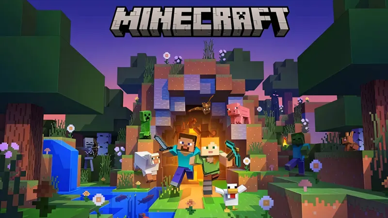
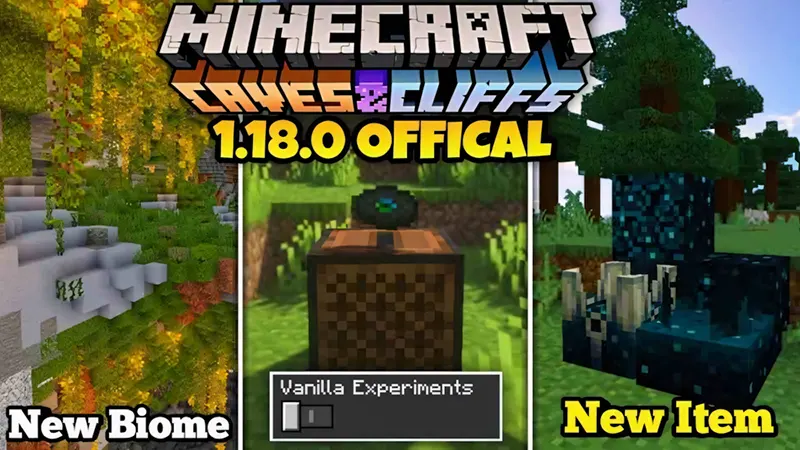
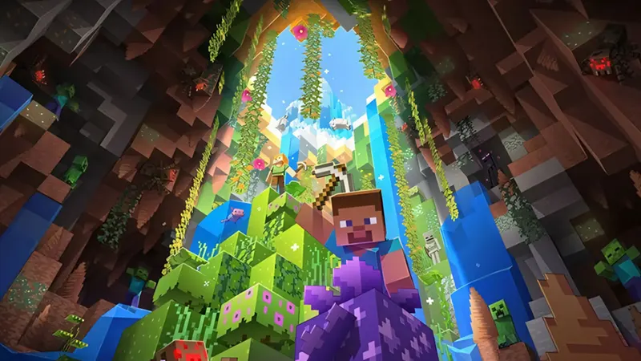

Minecraft PE 1.18.0
có nhiều thay đổi mang đến trải nghiệm thú vị cho người dùng. Tiêu biểu như:
Thế giới mở cao độ và rộng lớn hơn:
Chiều cao Overworld tăng lên Y320, chiều sâu đến Y-64 tạo phạm vi xây dựng và khám phá rộng lớn hơn.
Các loại địa hình mới thay đổi cách thức phân bố quặng, nước, và sinh vật,
làm thế giới trở nên phong phú và nhiều thách thức.
World blending và địa hình tự nhiên:
Chuyển tiếp quần xã sinh vật và địa hình diễn ra nhanh chóng, giảm thiểu sự ngắt quãng khi di chuyển
giữa thung lũng, ngọn đồi, hoang mạc hay hang động. Deepslate thay cho đá gốc tại Y0 để tăng tính chân thực
của địa hình. Mỗi quần xã có đặc trưng sinh thái riêng biệt, tác động lên sinh vật và tài nguyên xuất hiện.
Hang động 3D mới:
Hang đá khổng lồ, hang spaghetti xoắn ốc, hang ngập nước là những dạng hang mới. Người chơi sẽ tìm thấy
khoáng sản quý giá, bể nước ngầm và các sinh vật nguy hiểm ẩn náu. Việc khám phá hang động yêu cầu kỹ thuật,
ánh sáng, và dụng cụ thích hợp.
Quần xã sinh vật 3D:
Quần xã mới bao gồm đồi núi, đầm lầy, vùng đất ven biển với cây cối, sinh vật và địa hình riêng biệt.
Người chơi sẽ nhận ra sự khác biệt khi di chuyển từ quần xã này sang quần xã khác, từ cảnh quan thiên nhiên
đến hành động mob. Những quần xã mới đó mang lại khả năng sinh tồn đa dạng và kích thích sáng tạo mới.
Mob và sinh vật mới:
Warden xuất hiện trong hang động sâu, có khả năng nghe tiếng động và tấn công mạnh.
Strider giúp di chuyển trong dung nham, Star trader mở cơ hội trao đổi với người chơi khác.
Creeper, Zombie, Skeleton vẫn tồn tại nhưng có AI nâng cấp, tăng độ khó trong sinh tồn.
Quặng và tài nguyên mới:
Copper Ore, Amethyst Geode, Deep Slate xuất hiện trong các cấp độ khác nhau của Overworld.
Âm nhạc và hiệu ứng âm thanh mới
Nhạc nền của Kumi Tanioka và Lena Raine bổ sung trải nghiệm cảm xúc. Âm thanh môi trường sống động hơn,
từ tiếng nước chảy đến tiếng mob di chuyển. Gói âm nhạc miễn phí trên Marketplace cho phép cá nhân hoá trải nghiệm.
Cải tiến;
Cải tiến tính năng sinh tồn. Độ khó được cân bằng, giảm thiểu gian lận và tối ưu PvE. Redstone hoạt động ổn định,
cho phép sử dụng chế độ tự động hoá dễ dàng hơn. Tích hợp cả offline và online trên Xbox Live. Hỗ trợ đa nền tảng